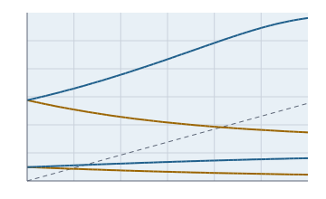

Structural mechanics for design
Compute cores without a user interface for components found in turbomachinery and plant: plane frames of beams, rotating discs with thickness profile and temperature, cylindrical and general shells of revolution under internal pressure, bending vibrations of rotors with gyroscopic effects, cyclically symmetric bladed discs with the SAFE diagram, fatigue and crack growth. Dense matrices for models with a few hundred degrees of freedom.

Rotor.campbell: rotor with an overhung disc. Blue forward whirl (stiffened by the gyroscopic effect), ochre backward whirl, dashed the excitation at running speed.Principles of the module
LinAlg, Verallgemeinert, EigenQr); the module only builds the matrices.Frame structures envisionz.struktur.fem
Plane beam elements with three degrees of freedom per node, Euler-Bernoulli or Timoshenko, consistent mass; static solution and natural vibrations. Background, formulas and pseudocode →
Rahmen
knoten(x, y), balken(a, b, E, A, I, ρ) or timoshenko(a, b, E, G, A, I, ρ, κ), sperre and einspannen; statisch(last) returns the displacements, eigenkreisfrequenzen() the natural circular frequencies from .
Rotating discs envisionz.struktur.scheibe
Closed form for constant thickness (solid and with bore), numerical for any thickness profile and temperature field as a linear boundary-value problem. Background, formulas and pseudocode →
Scheibe
gleichDick(a, b, r, ρ, ω, ν) → {σ_r, σ_θ}; rechne(daten, dicke, temperatur, a, b, …) → radii, displacement, radial and hoop stress, with blade pull at the rim.
Shells envisionz.struktur.schale
Circular cylindrical shell under axisymmetric internal pressure with edge disturbance, solved with Hermite elements on an elastic foundation; any shell of revolution (cone, sphere, plate) from conical frustum elements. Background and formulas →
Zylinderschale
Edges free, simply supported or clamped; result radial displacement, axial moment and hoop force.
Rotationsschale
Any meridian from conical frustum elements (cone, sphere, circular plate, composite vessels); normal pressure, ring loads and supports per node; result displacements, rotation, meridional and hoop force and moment. Asymmetric loads as Fourier harmonics.
Rotor dynamics envisionz.struktur.rotor
Shaft of beam elements, rigid discs with gyroscopic effect, isotropic bearings with damping; forward and backward whirl, Campbell diagram, critical speed. Background, formulas and pseudocode →
Rotor
welle, scheibe(node, m, I_d, I_p), lager(node, k, c), einspannen; moden(Ω) returns frequency, damping ratio and whirl direction, campbell the modes over speed, kritisch(j, h, bis) the intersection with .
Example – Laval rotor
Rotor r = new Rotor(0, 0.25, 0.5);
r.welle(0, 2.1e11, I, 0, A); r.welle(1, 2.1e11, I, 0, A); // massless shaft
r.lager(0, Double.POSITIVE_INFINITY, 0); r.lager(2, Double.POSITIVE_INFINITY, 0);
r.scheibe(1, 20, 0, 0);
Rotor.Mode[] m = r.moden(500); // m[0].frequenz() = sqrt(48 E I / (m L^3))Cyclic symmetry and SAFE diagram envisionz.struktur.rotor
One sector instead of the whole wheel, one Hermitian eigenproblem per nodal diameter; aliasing of the engine order and resonances in the SAFE diagram. Background and formulas →
Zyklisch
eigen(M0, K0, K1, N, k) for one nodal diameter, ganz for the whole wheel for comparison, knotendurchmesser(h, N), safe(…) with Southwell stiffening.
Fatigue and crack growth envisionz.struktur.lebensdauer
Rainflow counting after ASTM E1049, stress-life and strain-life curves, mean stress (Goodman, Gerber, Soderberg, Morrow, Smith-Watson-Topper), Neuber at the notch, Miner; crack growth after Paris. Background, formulas and pseudocode →
Rainflow, Ermuedung, Rissfortschritt
Spectrum from a load sequence (range, mean, count), life per method, damage sum; cycles to a crack length in closed form or with geometry factor via Gauss-Legendre, critical crack length.
How it is checked
| Probe | Checks | Anchors |
|---|---|---|
Rahmenprobe | 5 | cantilever and simply supported beam exactly (1e-12), cantilever frequencies after Blevins (2e-6), axial vibration, rotated beam, error cases |
Scheibenprobe | 5 | Timoshenko/Goodier for rotation and heat, numerical against closed form (1e-12 with bore), equilibrium of half the tapered disc (1e-6) |
Schalenprobe | 4 | edge disturbance clamped and simply supported after Timoshenko/Woinowsky-Krieger (1e-8), boiler formula |
Rotationsschalenprobe | 9 | cylinder, full sphere, circular plate (deflection and moments), hemisphere against Geckeler with Maxwell-Betti, cone from equilibrium, error cases; harmonics: plate under cos θ and cos 2θ, cantilever tube against the Timoshenko beam, cylinder against the ring |
Rotorprobe | 6 | Campbell diagram, Laval rotor, simply supported shaft, overhung disc against the frequency equation (1e-5), single-mass oscillator with damping |
Zyklischprobe | 4 | disc-blade chain against the 2×2 equation (1e-12), whole wheel against sectors (1e-10), aliasing, SAFE |
Lebensdauerprobe | 8 | ASTM E1049 example with means, transition life, Haigh limiting cases, Neuber, Miner, Paris in closed form against quadrature (1e-12) |
Limits
- Dense matrices; meant for design models, not for large meshes.
- Timoshenko beam in dynamics with the Euler-Bernoulli mass without rotary inertia.
- Shells without transverse shear deformation; asymmetric loads computed per harmonic and superposed.
- Rotor with isotropic bearings; the gyroscopic effect of the shaft itself is neglected.